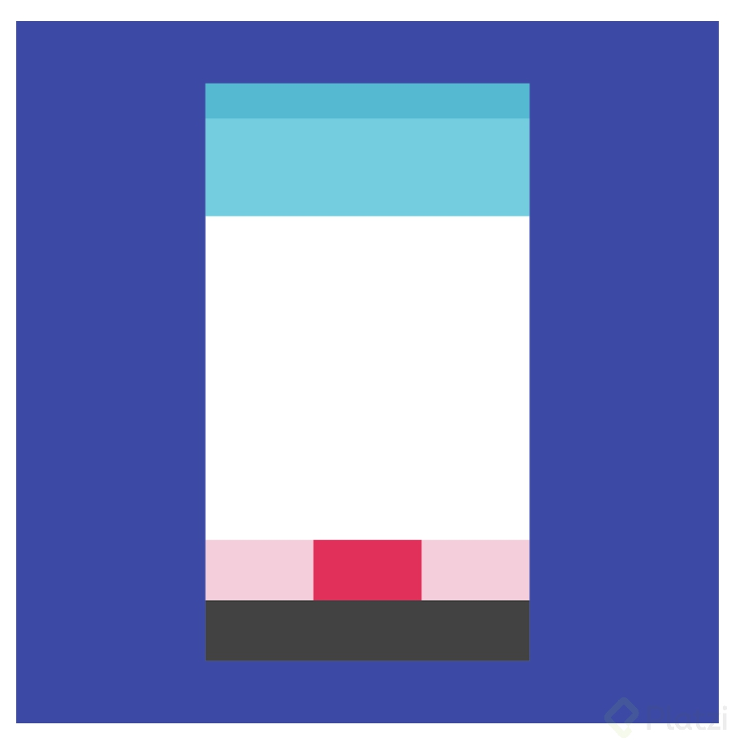
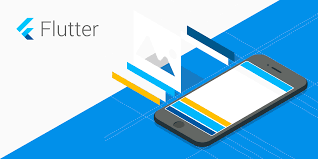

La interfaz de usuario (IU) de una app de Android se compila como una jerarquía de diseños y widgets. Los diseños son objetos ViewGroup, contenedores que controlan cómo se posicionan sus vistas secundarias en la pantalla. Los widgets son objetos View, componentes de la IU, como botones y cuadros de texto.
Tecnologías de diseño
Material Design
Material Design son las métricas de diseño de aplicaciones fueron construidas por Google y traídas a Android a partir de la versión 5.0 Lollipop.
Específicamente lo que se introdujo es un tema nuevo, nuevos widgets y nuevas API’s de desarrollo.
Sobre los widgets nuevos, entendamos widgets por elementos de la interfaz gráfica. Tenemos los siguientes:
Tarjetas
Listas de Tarjetas
Una nueva Toolbar
Bottom Bar
Nuevos botones de acción
Editores de texto con efectos
Etc.
Material Design está basado en el manejo real y físico de materiales,
como son especialmente hojas de papel, además que este, permite jugar con las sombras para crear efectos tridimensionales, la integración de animaciones es tan realista que se comportarán de acuerdo a las leyes de la física, por lo tanto para general esto último tenemos API’s de desarrollo que se integraron para trabajar con efectos y animaciones que hagan más interactivo el diseño.
Flutter
Flutter es el nuevo SDK de Google creado para diseñar interfaces nativas iOS y Android. Utiliza el lenguaje de programación Dart y fue creado para programadores de interfaces móviles. Esto es el comienzo de lo porvenir en lo que será el frontend mobile.
HTML5
HTML5 es la última versión de HTML. El término representa dos conceptos diferentes: Se trata de una nueva versión de HTML, con nuevos elementos, atributos y comportamientos. Contiene un conjunto más amplio de tecnologías que permite a los sitios Web y a las aplicaciones ser más diversas y de gran alcance. A este conjunto se le llama HTML5 y amigos, a menudo reducido a HTML5 . Diseñado para ser utilizable por todos los desarrolladores de Open Web, esta página referencía numerosos recursos sobre las tecnologías de HTML5, clasificados en varios grupos según su función.

CSS3
CSS (siglas en inglés de Cascading Style Sheets), en español «Hojas de estilo en cascada», es un lenguaje de diseño gráfico para definir y crear la presentación de un documento estructurado escrito en un lenguaje de marcado.2 Es muy usado para establecer el diseño visual de los documentos web, e interfaces de usuario escritas en HTML o XHTML; el lenguaje puede ser aplicado a cualquier documento XML, incluyendo XHTML, SVG, XUL, RSS, etcétera. Te puede ayudar a crear tu propio sitio web. Junto con HTML y JavaScript, CSS es una tecnología usada por muchos sitios web para crear páginas visualmente atractivas, interfaces de usuario para aplicaciones web y GUIs para muchas aplicaciones móviles (como Firefox OS).3

JavaScript
JavaScript (JS) es un lenguaje de programación ligero, interpretado, o compilado justo-a-tiempo (just-in-time)
con funciones de primera clase.
JavaScript es un lenguaje de programación basada en prototipos, multiparadigma, de un solo hilo, dinámico, con soporte para programación orientada a objetos,
imperativa y declarativa (por ejemplo programación funcional).